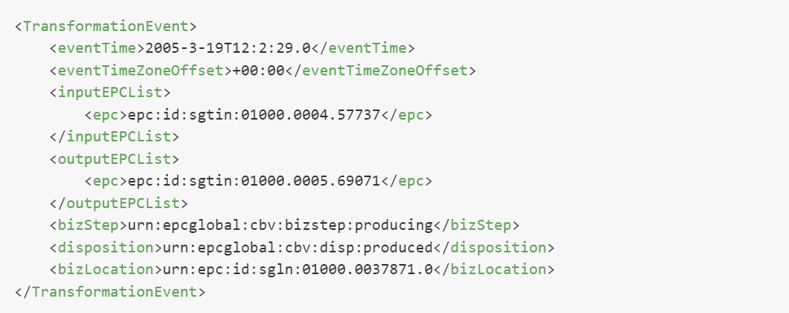
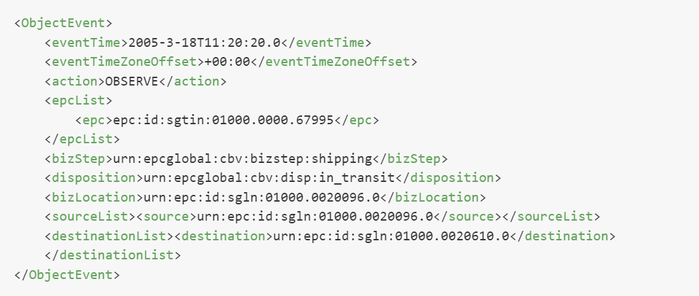

Introduction
This project is an EPCIS Events Generator based on the game OpenTTD version 1.5.0. It captures all the transportation and the manufacturing events that happen in the game and writes them into an output file using the EPCIS Format.
This project is free and open-source software licenced under the GNU General Public Licence 2.0.
For more details about OpenTTD, please go to this page
For more details about EPCIS, please go to this page
A great number of transportation and manufacturing events happen in the game OpenTTD. For example, one can cite the events that correspond to the creation of cargos (wood, mail, coal,...), the shipping of cargos using a vehicle, and the reception of cargos in a station. The current Project collects all these events and writes them into a file using the EPCIS standard.
For each game, two files are produced:
- EventData File: This file contains the events captured in the game.
- MasterData File: This file defines the bizLocations and the object classes. These elements are explained below.
A bizLocation is a number that identifies a unique place in the game. This place can be a station, a town, or an industry. For each bizLocation, MasterData File specifies the name of the location, the geographic coordinates (latitude and longitude), and the type (whether the location is a station, a town, or an industry). In the listing below, the identifier "urn :epc :id :sgln :01000.0020935.0" is a bizLocation. An object class is a range of identifiers that correspond to objects of a specified type. In Listing 1, the object class "epc :id :sgtin :01000.0001.*" correspond to the type "coal". This means that all the identifiers that begin with "epc :id :sgtin :01000.0001." correspond to objects of type coal. An example of identifiers of objects of type coal is "epc :id :sgtin :01000.0001.2047122".
Types of events captured in the game
Several types of events are captured in this project:
- Creation: It is an event of type "ObjectEvent". It is captured when objects are created. It can happen in an industry when creating objects that don't require other objects as an input. It can also happen in a town when creating passengers and mails. The listing below is an example of a creation event. The bizStep (Business Step) is "commissinning".
- Transformation: It is an event of type "Transformation event". It is captured when a set of objects is transformed to new objets. An example of this event is the transformation of "Iron Ore" to "Steel". The listing below is an example of a transformation event. The bizStep is "producing". 
- Storing: It is an event of type "Object Event". It is captured when objects are stored in the industry. The listing below is an example of a storing event. The bizStep is "storing".
- Shipping: It is an event of type "Object Event". It is captured when a set of objects is shipped to another place. The listing below is an example of shipping event. The bizStep is "shipping". 
- Receiving: It is an event of type "Object Event". It is captured when a set of transported objets reaches its destination. The listing below is an example of receiving event. The bizStep is "receiving".
Compilation and execution
We have already built this project on some Operating Systems. The folder "releases" contains executables that are ready to compile. This folder contains two repositories:
- windows 32: This folder contains an executable "openttd.exe" that can be used directly on Windows 7, Windows 8, Windows 10 (both 32 bits and 64 bits)
- ubuntu 15.10: This folder contains an executable "openttd" that can be used on Ubuntu.
The script "compile-ubuntu.sh" allows to compile this project on Ubuntu. Otherwise, this project can be compiled in the same manner than the standard version of the game OpenTTD. The instructions of compilation are explained in the following links:
- For Unix-Like systems
- For Mac OS X
- For Windows
How to use this project
There are two ways to generate events using this project:
- Launch a game from the graphic interface: We can create a new game or load a saved game. While the user is playing, all the events that happen are saved in the output file.
- Launch a game using the command line: We can also launch a saved game without graphic interface. The advantage is that the speed of the game is so high that a great quantity of data can be generated in a few time.
To launch a saved game without graphic interface, the following command line can be used:
name_of_executable -g path_of_saved_game -v null:ticks=number_of_iterationsThe parameters are:
- name_of_executable: the name of the executable. For example, the name is "openttd.exe" for Windows
- path_of_saved_game: the file path of the game that we want to launch.
- number_of_iterations: the number of iterations the game will execute.
openttd.exe -g saves\autosave15.sav -v null:ticks=100000